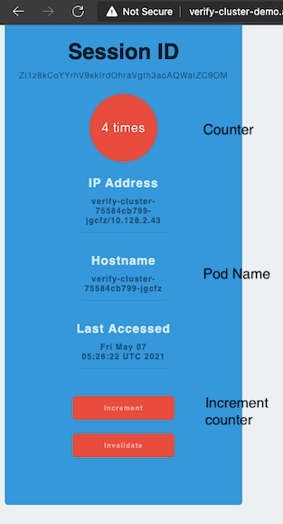

JBoss EAP on OpenShift
Binary Build and Deployment
- Clone verify cluster app
Pacakge application (WAR) and copy at your local directory
mvn clean package mkdir -p deployments cp target/verify-cluster.war deploymentsCreate build config with EAP image stream and use local WAR file
Initial environment variables
APP_NAME=verify-cluster PROJECT=$(oc project -q) IMAGE_STREAM=jboss-eap73-openshift:7.3 REPLICAS=2 VERSION=1.0.0 BINARY_PATH=deployments/verify-cluster.warBuild EAP container image with deployed application
Create build config
oc new-build --binary=true \ --name=${APP_NAME} -l app=${APP_NAME} --image-stream=${IMAGE_STREAM}Start build
oc start-build ${APP_NAME} \ --from-file=${BINARY_PATH} \ --followTag image with version
oc tag ${APP_NAME}:latest ${APP_NAME}:${VERSION}Check build config
oc get buildconfig/verify-clusteroutput
NAME TYPE FROM LATEST verify-cluster Source Binary 1
Create Deoloyment
Start build and deploy with oc new-app
oc new-app ${APP_NAME}:${VERSION} \ --labels=app=${APP_NAME},deploymentconfig=${APP_NAME},version=${VERSION},app.kubernetes.io/name=jbossCheck pods
oc get pods -l app=$APP_NAMEOutput
NAME READY STATUS RESTARTS AGE verify-cluster-565fbb6f86-jt5xl 1/1 Running 0 4m42sCheck on Development Console
Pods

Resources

Create route
oc expose svc/${APP_NAME} echo "URL: http://$(oc get route ${APP_NAME} -n ${PROJECT} -o jsonpath='{.spec.host}')/verify-cluster"Test access verify-cluster and press Increment. Notice pod name and number of hits will be increased

Configure Standalone Cluster
Service Account default needs view role to run KUBE_PING
oc adm policy add-cluster-role-to-user \ view system:serviceaccount:$PROJECT:default -n $PROJECTPause rollout
oc rollout pause deployment ${APP_NAME}Configure JGROUP
oc set env deployment ${APP_NAME} \ JGROUPS_PING_PROTOCOL=kubernetes.KUBE_PING \ KUBERNETES_NAMESPACE=${PROJECT} \ KUBERNETES_LABELS=app=${APP_NAME},version=${VERSION} oc set env deployment ${APP_NAME} DISABLE_EMBEDDED_JMS_BROKER=trueScale replicas
oc scale deployment ${APP_NAME} --replicas=${REPLICAS}Resume rollout and check pods
oc rollout resume deployment ${APP_NAME} oc get pods -l app=$APP_NAME,version=$VERSIONOutput
NAME READY STATUS RESTARTS AGE verify-cluster-75584cb799-rcf5t 1/1 Terminating 0 52s verify-cluster-789f5dd9d-qmg9s 1/1 Running 0 34s verify-cluster-789f5dd9d-s4q8z 1/1 Running 0 38sCheck log
oc logs $(oc get pods -l app=$APP_NAME,version=$VERSION | tail -n 1 | awk '{print $1}')
Test that sessions is replicated
- Access verify-cluster app
- Increment counter
Delete pod that response your request
oc delete pods <pod name>- Refresh page again and check that counter still continue.
binary_build.sh can be used to automated all steps.